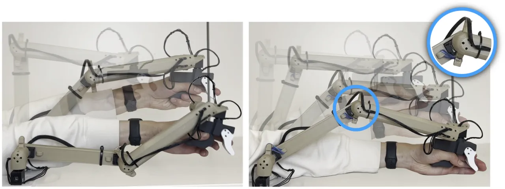
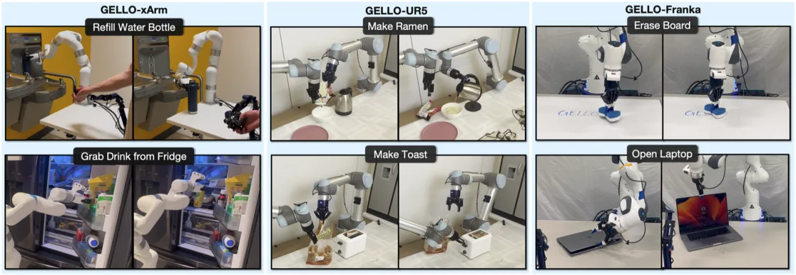
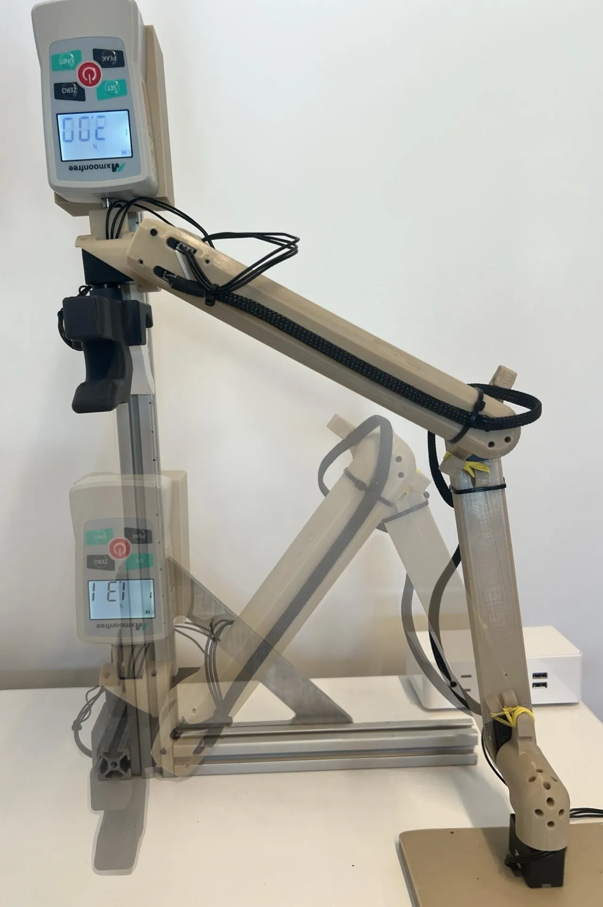
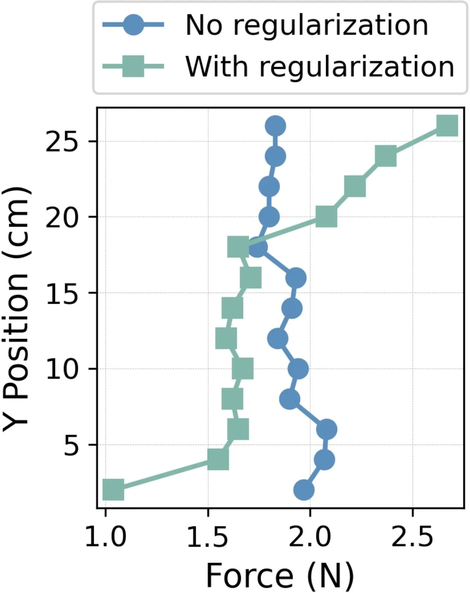
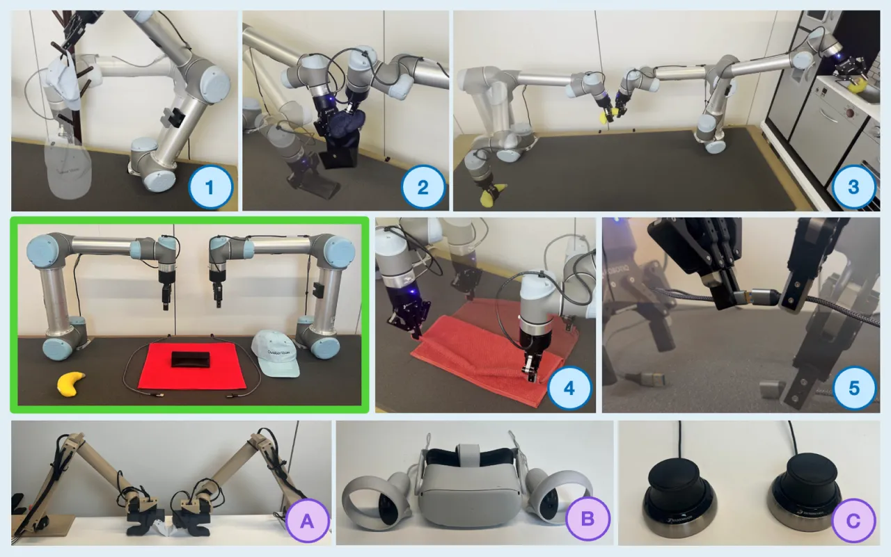
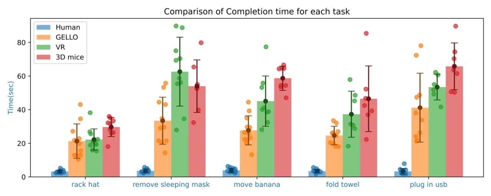

GELLO 通过构建目标机械臂的缩小版运动等效结构，以不到 $300 的成本提供直觉式遥操作体验。相比 VR 控制器和 SpaceMouse，GELLO 在五项双臂操作任务中平均成功率达到 0.92，显著超越其他低成本方案，并已为 Franka、UR5、xArm 三款机器人平台开源了全部硬件设计与代码。
机器人模仿学习的性能随数据集规模提升而提升，但高质量演示数据的采集仍是主要瓶颈。传统双边遥操作设备（如力反馈外骨骼）成本高昂；而 VR 控制器、SpaceMouse 等低成本替代方案将机器人运动学抽象化，使操作者难以感知奇异点和碰撞风险，操作效率低下。
"Systems that abstract away kinematic constraints prevent operators from managing singularities and collisions effectively."

GELLO 的核心思路是构建目标机器人臂的缩小版运动等效结构（scaled kinematically equivalent structure）：操作者直接操纵各关节，无需计算逆运动学，同时通过关节阻力天然感知奇异点。配合弹簧/橡皮筋关节正则化和 DYNAMIXEL 高精度编码器，GELLO 以极低成本实现直觉式操作。

GELLO 采用 DYNAMIXEL XL330 系列舵机。该舵机配备 12-bit 高精度编码器，关节测量精度达 0.088 mechanical degree 以内。选用 XL-330-288T 型号（最大传动比），提供较大关节阻力，作为天然阻尼，帮助操作者感知力矩和奇异点。舵机自带编码器和通信协议，构成"off-the-shelf, self-contained solution"。
GELLO 将目标机械臂按比例因子 α = 0.5 缩小，保留完全相同的运动学结构。操作者直接控制各关节角度，无需求解逆运动学（IK），并可通过关节阻力感受奇异点临近。小尺寸设计提升便携性，同时降低操作者对环境碰撞的视觉遮挡。


重力会使手臂自然下垂至不理想构型。GELLO 使用弹簧或橡皮筋等简单机械元件进行"关节正则化"，产生被动力反馈：
• 无正则化：维持关节姿态需约 1.9 N 的外力。
• 有正则化：所需力随高度/关节角度变化，自然引导操作者远离奇异构型。
软件栈基于 Python，利用 DYNAMIXEL SDK 读取各关节编码器值，通过 ZMQ 消息传递将关节角度流式发送给机器人控制器，实现直接关节空间控制，无需 IK 求解。设计高度模块化，支持快速扩展至新机器人平台。
用户研究共招募 12 名无专业遥操作训练经历的大学志愿者，使用双臂 UR5 系统对 GELLO、VR（Meta Quest 2）、3D Mice（SpaceMouse）三种设备进行对比。每位参与者先进行 6 分钟通用介绍，再对每种设备进行 5 分钟练习，然后执行 5 项任务，设备顺序随机化（6 种排列各重复 2 次）。
| 设备 | Hat | Mask | Banana | Towel | USB | 平均 |
|---|---|---|---|---|---|---|
| GELLO | 0.92 | 0.92 | 1.0 | 0.92 | 0.83 | 0.92 |
| VR (Meta Quest 2) | 0.92 | 0.83 | 0.75 | 0.58 | 0.50 | 0.72 |
| 3D Mice (SpaceMouse) | 0.75 | 0.58 | 0.67 | 0.58 | 0.58 | 0.63 |
| 失败原因 | GELLO | 3D Mice | VR |
|---|---|---|---|
| 超时 (Timeout) | 1 | 9 | 5 |
| 自碰撞 (Self Collision) | 1 | 5 | 5 |
| 环境碰撞 (Env Collision) | 3 | 6 | 6 |
| 其他 (Other) | 2 | 1 | — |
GELLO 超时次数仅为 1 次（SpaceMouse 为 9 次），说明运动等效设计显著降低了操作难度。论文指出："self collisions were a common problem for spacemouse and VR controllers due to teleoperator paying attention only to end effector"，而 GELLO 操作者能感知整臂构型，有效规避自碰撞。


GELLO 成功完成了多类复杂任务：接触丰富型任务（插 USB、折叠毛巾）、长时程任务（倒水至水瓶，需承担较大负载）、双臂协作任务，以及 7-DOF 臂（Franka Panda、xArm）的零空间管理操作，验证了框架的通用性。
| 设备 | 成本 |
|---|---|
| 3D Mouse (SpaceMouse) | $150 |
| GELLO（本文） | $300 |
| VR (Meta Quest 2) | $300 |
| Robot-to-robot（UR5） | $30,000 |
| Haptic Device (Omega7) | $40,000 |
由于 DYNAMIXEL XL330 舵机输出力矩有限，GELLO 不具备力反馈功能。论文原文指出："GELLO lacks force feedback due to limited output torque of motors, compromising contact-rich task performance. This sacrifice prioritized affordability and accessibility."
作者表示希望"将来作为可选功能加入力反馈，以支持更高级的使用场景"。
参与用户均为缺乏专业遥操作训练经验的志愿者，且每种设备的练习时间仅为 5 分钟。论文坦承："User study involved inexperienced users with limited practice time. Extended training could significantly improve proficiency with alternative devices."
换言之，VR 控制器和 SpaceMouse 在更长时间训练后的性能差距可能缩小。
（作者隐含，inferred from design）每套 GELLO 均针对特定机器人臂运动学定制 3D 打印件，扩展至新平台需重新设计并打印结构件。尽管开源了三款平台（Franka、UR5、xArm）的设计，但快速适配任意新型机器人仍需一定工程工作量。